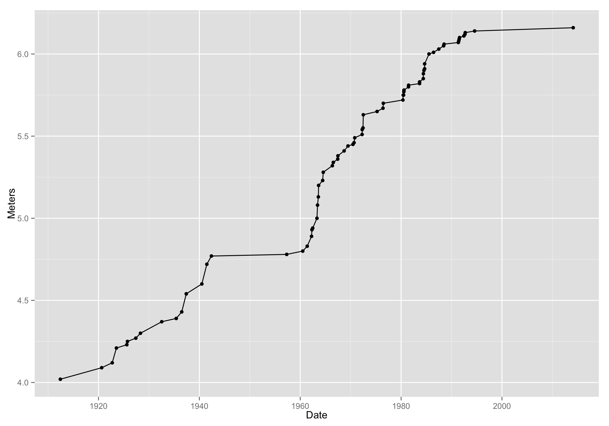
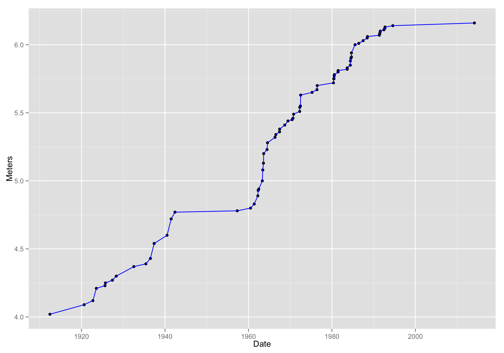
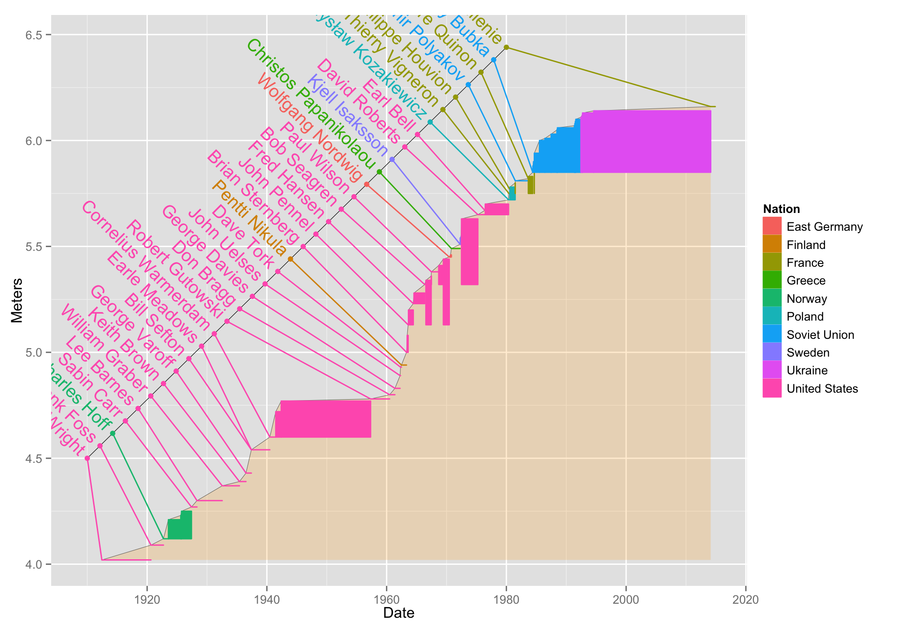

Intro to ggplot2
Prerequisites
- To work through the examples you will need a few different packages.
- Please download/install these before coming to class:
install necessary packages:
install.packages(c("ggplot2","lubridate", "plyr", "mosaic", "mosaicData"))Pull the most recent version of the rep-res-course repo just before coming to class.
Goals for this hour:
- Describe (briefly)
ggplot2s underlying philosophy and how to work with it. - Quickly overview the geoms available in
ggplot2 - Develop an example plot together
- Turn you all loose with the
mosaicpackage to experiment with different plots
About ggplot2
Basics
- A package created by Hadley Wickham in 2005
- Implements Wilkinson’s “grammar of graphics”
- Unified way of thinking about 2-D statistical graphics
- Not entirely easy to learn
- if you already know R’s base graphics system, it is painful to re-learn a different way of doing things
- if you don’t already know how to do graphics in R, be glad.
- regardless it is worth learning ggplot
- I am not even going to teach R’s base graphics system
- Amazing for quick data exploration and also produces publication quality graphics
- Support for legends etc., considerably better/easier than R base graphics
What is this grammar of graphics?
- Traditionally, people have referred to plots by name
- i.e., scatterplot, histogram, bar chart, bubble plot, etc.
- Disadvantages:
- Lots of possible graphics = way too many names
- Fails to acknowledge the common elements / similarities / dissimilarities between different plots
- Wilkinson’s Grammar of Graphics (a book) describes a few building blocks which when assembled together in particular ways can generate all these named graphics (and more)
- Provides a nice way of thinking about and describing graphics
ggplot2
- Hadley Wickham’s R implementation of a modified (layered) grammar of graphics
ggplotandggplot2are similar. `ggplot2is just more recent (and recommended)ggplotoperates on data frames- in R base graphics typically you pass in vectors
- in
ggploteverything you want to use in a graphic must be contained within a data frame - Takes getting used to, but ultimately is a good way of thinking about it.
Components of the grammar of graphics
- data and aesthetic mappings
- geoms (geometric objects)
- stats (statistical transformations)
- scales
- coords (coordinate systems)
- facets (a specification of how to break things into smaller subplots)
We will focus on 1, 2 for most of today.
In a nutshell
Without getting into the complications of scales and coordinate systems here, in a nutshell, is what ggplot does:
- Layers in plots are made by:
- mapping values in the columns of a data frame to aesthetics, which are properties that can visually express differences, for example:
- x-position
- y-position
- shape (of a plot character, for example)
- color
- size (of a point, for example)
- Portraying those values by drawing a geometric object whose appearance and placement in space is dictated by the mapping of values to aesthetics.
- mapping values in the columns of a data frame to aesthetics, which are properties that can visually express differences, for example:
An example, please
Phew! That is a crazy mouthful. Is this really going to help us make pretty plots?
All I can say is you owe it to yourself to persevere — ggplot2 is really worth the effort!
A pole vaulting example
- Here is a concrete example: we will investigate the history of pole-vaulting world records
- I grabbed the data by copying them from http://en.wikipedia.org/wiki/Men's_pole_vault_world_record_progression and pasting them into a text file
Here we make a data frame out of them:
library(lubridate) # for dealing with dates library(ggplot2) library(plyr) #> #> Attaching package: 'plyr' #> #> The following object is masked from 'package:lubridate': #> #> here # first off read the data into a data frame pv <- read.table("data/mens_pole_vault_raw.txt", comment.char = "%", sep = "\t", header = TRUE, stringsAsFactors = FALSE ) # and then clean it up: pv$Date <- gsub("\\[[0-9]\\]", "", pv$Date) # remove the footnote refs in the dates pv$Date <- mdy(pv$Date) # convert dates to lubridate pv$Record <- as.numeric(gsub(" m.*", "", pv$Record)) # remove the "m" and other stuff from the heights names(pv)[names(pv) == "Record"] = "Meters" # change "Record" column to "Meters"Great, what do these look like? Try
View(pv)if you are following along. Here are the first few rows too:head(pv) #> Meters Athlete Nation Venue Date X..2. #> 1 4.02 Marc Wright United States Cambridge, U.S. 1912-06-08 1 #> 2 4.09 Frank Foss United States Antwerp, Belgium 1920-08-20 1 #> 3 4.12 Charles Hoff Norway Copenhagen, Denmark 1922-09-22 1 #> 4 4.21 Charles Hoff Norway Copenhagen, Denmark 1923-07-22 2 #> 5 4.23 Charles Hoff Norway Oslo, Norway 1925-08-13 3 #> 6 4.25 Charles Hoff Norway Turku, Finland 1925-09-27 4
A first ggplot
- There is a simplified ggplot function called
qplotthat behaves more like R’s base graphics functionplot().- I don’t recommend
qplot. It will just lengthen the time it takes to understand the grammar of graphics. - Instead, we will use the full
ggplot()standard syntax.
- I don’t recommend
First we have to essentially establish a plotting area upon which to add layers. We will do this like so:
g <- ggplot()At this point,
gis a ggplot plot object. We can try printing it:
That doesn’t work, because there is nothing to plot. We have to add a layer to it.g #> Error: No layers in plotAdding a layer is done by adding a collection of geometric objects to it using one of the
geom_xxxxfunctions. Each such function requires a data set and a mapping of columns in the data set to aesthetics. Let’s make some scatter-points: Meters as a function of Date:g2 <- g + geom_point(data = pv, mapping = aes(x = Date, y = Meters)) g2
Wow! That totally worked. Here are some interesting points about:
g2 <- g + geom_point(data = pv, mapping = aes(x = Date, y = Meters)) g2- You add layers by catenating them with
+. - the names of the columns don’t need to be quoted.
- when you map aesthestics you wrap them inside the
aes()function - the full object with all the layers is returned into
g2and then we printed it (by typingg2). (we could have also just saidg + geom_point(data = pv, mapping = aes(x = Date, y = Meters))) - we didn’t have to do anything fancy to the dates…ggplot knew how to plot them. This is thanks to turning the dates into
lubridateobjects. (If you work with dates, get to know the lubridate package!)
- You add layers by catenating them with
I want to overlay a line on that…No problem! Add another layer:
g3 <- g2 + geom_line(data = pv, mapping = aes(x = Date, y = Meters)) g3
That worked! We just added (literally, using a+sign!) another layer—one that had a line on it. BUT! what if I want to make that line blue?Make the line blue. Note that you are giving the line an aesthetic property (the color blue), but you are not mapping that to any values in the data frame, so you don’t put that within the
aes()function:g4 <- g2 + geom_line(data = pv, mapping = aes(x = Date, y = Meters), color = "blue") g4
That worked! Notice that we were able to put that new layer atop
g2which we had stored previously.
ggplot’s system of defaults
- Hey! I am really tired of typing
data = pv, mapping = aes(x = Date, y = Meters)isn’t there some way around that? - Yes! You can pass a default data frame and/or default mappings to the original
ggplot()function. Then, if data and mappings are not specified in later layers, the defaults are used. Witness!
d <- ggplot(data = pv, aes(x = Date, y = Meters)) # this defines defaults d2 <- d + geom_point() # add a layer with points d2 # print it
- Sick! Now we can add all sorts of fun layers as we see fit, each time, by invoking a
geom_xxx()function. Let’s go totally crazy!
Establish plot base with defaults:
d <- ggplot(data = pv, aes(x = Date, y = Meters))Add a transparent turquoise area along the back:
d2 <- d + geom_ribbon(aes(ymax = Meters), ymin = min(pv$Meters), alpha = 0.4, fill = "turquoise") d2
Wow! I feel like transparency was never so easy in R base graphics!
Put a line along there too:
d3 <- d2 + geom_line(color = "blue") d3
Now add some small orange points:
d4 <- d3 + geom_point(color = "orange") d4
Now, add “rugs” along the x and y axes that show the position of points, and in them, map color to Nation:
d5 <- d4 + geom_rug(sides = "bl", mapping = aes(color = Nation)) d5
- Note that we are using the
aes()function to add the mapping of color to Nation within thegeom_rug()function.- Note also that the legend was created automatically.
- Wow! A legend is produced automatically, by default, and it looks pretty good. This doesn’t happen without an all-out wrestling match in R’s base graphics system.
- Note that we are using the
- So, that was some fun playing around with the truly awesome ease with which you can build up complex and lovely graphics with ggplot.
How many geoms are there?
- Quite a few. There is a good summary with little icons for each here
- Note that most geoms respond to the aesthetics of
x,y, andcolor(orfill). And some have more (or other) aesthetics you can map values to.
Getting even sillier
- Here is another plot I made while geeking out.
- I wanted to get a sense for how much individual athletes had improved since their first world record
# add a column for the date of first record for each athlete
tmp <- ddply(.data = pv, .variables = "Athlete", .fun = function(pv) min(pv$Meters))
rownames(tmp) <- tmp$Athlete
pv$FirstRecordMeters <- tmp[pv$Athlete, "V1"]
# now add a column for date of the next record:
pv$DateNext <- c(pv$Date[-1], ymd(today()))
bb <- ggplot(data = pv, mapping = aes(x = Date, y = Meters, color = Nation)) +
geom_ribbon(aes(ymax = Meters, color = NULL), ymin = min(pv$Meters), alpha = 0.2, fill = "orange") +
geom_line(color = "black", size = .1) +
geom_rect(aes(xmin = Date,
xmax = DateNext,
ymin = FirstRecordMeters,
ymax = Meters,
fill = Nation
))
bb
I used geom_rect() to plot rectangles where the bottom edge is situated at the athlete’s lowest world record. Note how it required massaging some data into the data frame at the beginning.
More! Add some text to it!
Now, I want to try to get every single name in the first time the person set the record. Of course, they won’t all fit exactly at the point (Date and Meters) of each record, so let’s space them out evenly, then draw little line segments to meet up with the records.
We make a new data frame that has just the first time a person got a record
pv1 <- pv[pv$X..2.==1,] pv1[1:5, ] # have a look at it #> Meters Athlete Nation Venue Date X..2. #> 1 4.02 Marc Wright United States Cambridge, U.S. 1912-06-08 1 #> 2 4.09 Frank Foss United States Antwerp, Belgium 1920-08-20 1 #> 3 4.12 Charles Hoff Norway Copenhagen, Denmark 1922-09-22 1 #> 7 4.27 Sabin Carr United States Philadelphia, U.S. 1927-05-27 1 #> 8 4.30 Lee Barnes United States Fresno, U.S. 1928-04-28 1 #> FirstRecordMeters DateNext #> 1 4.02 1920-08-19 16:00:00 #> 2 4.09 1922-09-21 16:00:00 #> 3 4.12 1923-07-21 16:00:00 #> 7 4.27 1928-04-27 16:00:00 #> 8 4.30 1932-07-15 16:00:00Look at the previous plot and decide that we would like to run names equally spaced along a line that runs from about (1910, 4.25) to (1980, 6.5). Note that we will have to squish 34 names along that line. So, we can define the points along it as follows:
pv1$nameline.x <- seq(mdy("1-1-1910"), mdy("1-1-1980"), length.out = nrow(pv1)) # holy cow! did you see how easily we got that sequence of dates? lubridate is amazing! pv1$nameline.y <- seq(4.5, 6.44, length.out = nrow(pv1))Add that line to the plot as colored points atop a black line.
bb2 <- bb + geom_line(data = pv1, mapping = aes(x = nameline.x, y = nameline.y), color = "black", size = 0.2) + geom_point(data = pv1, mapping = aes(x = nameline.x, y = nameline.y)) bb2
Notice how the color of Nation gets applied to the points automatically.
Now, little colored lines from the nameline points to the records. For this we can use the
geom_segment()function.bb3 <- bb2 + geom_segment(data = pv1, mapping = aes(xend = nameline.x, yend = nameline.y)) bb3
Finally, we want to add the names of the athletes in there. We already have their names in
pv1. We use thegeom_text()function.
bb4 <- bb3 + geom_text(data = pv1, aes(label = Athlete, x = nameline.x - dyears(.75), y = nameline.y + .03), angle = -45, hjust = 1) bb4That is pretty cool, but a lot of names have gotten chopped off. Can we do something about that? There might be something a little more automatic, but we can do it by-hand, too:
bb4 + coord_cartesian(xlim = mdy(c("1-1-1890", "1-1-2020")), ylim = c(3.8, 7.1))
Playing on your own
It can be downright daunting learning ggplot. That is why I recommend you get a feel for it by playing with a sort of ggplot GUI developed by the guys who make the mosaic package.
Do this:
library(ggplot2)
library(mosaic)
library(mosaicData)
library(lubridate)
mPlot(mtcars, system = "ggplot")This will load the mtcars data set into moscaic’s ggplot “interactor”.
- Click the “gear” symbol in the upper left of the plot window and start fiddling!
- Note that you only access a fraction of ggplot’s functionality this way, but it can still be informative.
- Hit the Show Expression button to see what commands create the resulting plot.
- Look for other data sets. Type
data()to see a list of them. Or try
data(package = "mosaicData")Then consider:
mPlot(Heightweight, system = "ggplot")
mPlot(Galton, system = "ggplot")
mPlot(Births78, system = "ggplot")Or plug your own data frame in there.
- After seeing the expression, can you modify it to add more stuff, like:
Births78$day_of_week <- wday(ymd(Births78$date), label = TRUE)
ggplot(data=Births78, aes(x=dayofyear, y=births, color = day_of_week)) + geom_point() + theme(legend.position="right") + labs(title="") + geom_smooth(method = "loess", alpha = .1)
comments powered by Disqus